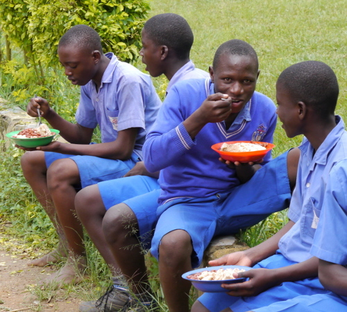
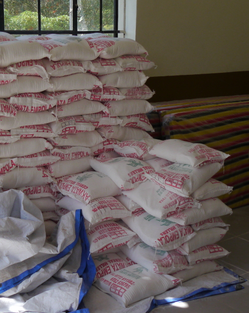
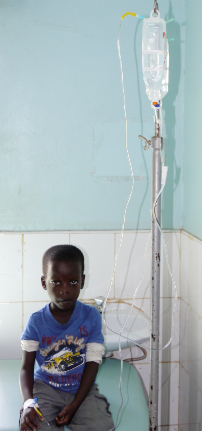
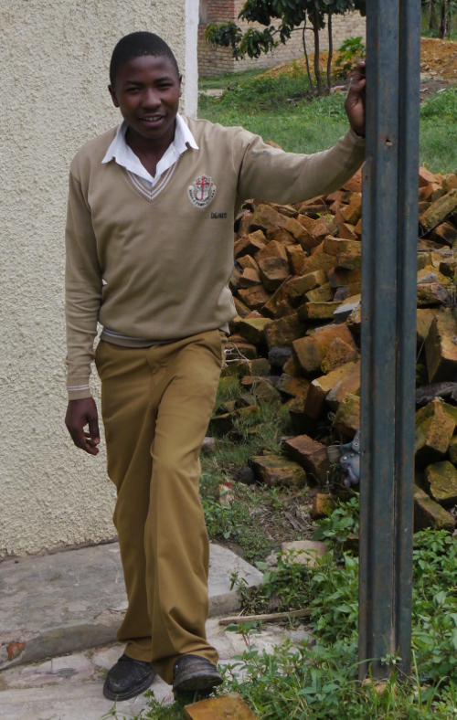
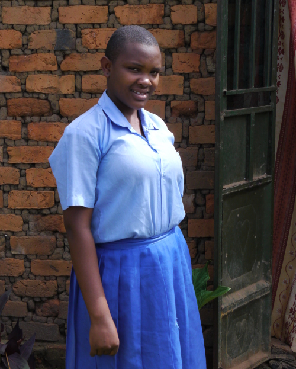
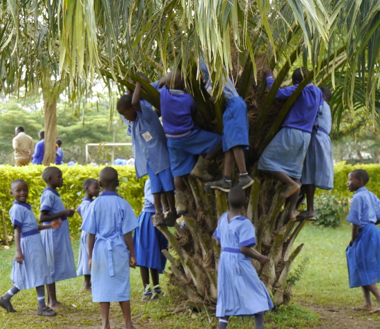
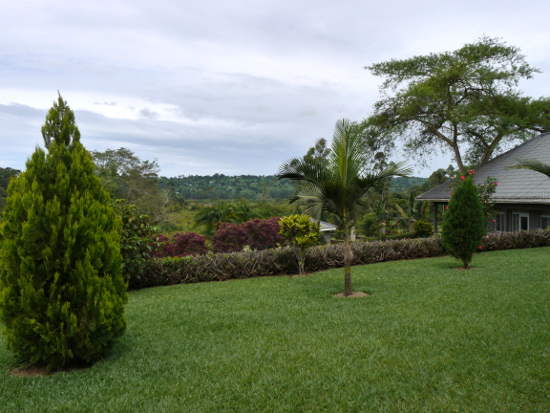

Bram Moolenaar, treasurer of ICCF Holland, visited the Kibaale Children's Centre in April 2014. This is his report.
ArrivalI land in Entebbe on Saturday evening. The formalities are quickly dealt with and my baggage arrives quickly. Now I need some Uganda shillings. I'm positively surprised when the first ATM I try actually works. Previous trips this was a problem, only one out of three ATMs worked. A sign that infrastructure in Uganda is getting better.The next task is getting a SIM card, so that I can use the internet devices that I brought. Unfortunately, the Airtel shop at the airport is closed, and that is the only provider that works in Kibaale. The driver of the hotel is there to pick me up. He proposes to try in town. We drive to a small street side shop. It is full with cheap electronics and phones. The seller has an Airtel SIM and can also sell me a scratch card to use internet. Very good, and he can activate a data bundle on my phone. But it doesn't appear to work, and the man doesn't know how to configure it. Fortunately I had seen the APN name on the Airtel website, and entering that in the phone made it work. A good start! I stay in a simple hotel in Entebbe for the night.
|
 Primary school boys eating lunch |
|
 Maize flour for families that do not have sufficient food |
To KibaaleA driver comes to pick me up on Sunday morning. He is a bit late, there was a lot of rain and the road he used was slippery. First we go to Nakumatt, a new supermarket in Entebbe. It is inside a new shopping mall, it is still under construction. Also a sign that Uganda is doing better. De security is strict, our vehicle is inspected. The supermarket has a large choice, I have to search for the things I need for the days I will be in Kibaale.The trip first goes to Masaka. Along the road we see a lot of traffic police. The driver explains that it is almost Easter and the police tries to make a bit of extra money. Hopefully it also improves the road safety. The road is partly under construction. It has been worked on for a couple of years. Closer to Masaka we drive on the nice new road. Jeff is waiting for me in Masaka, we immediately go on to Kibale. The last stretch goes over dirt road, but it isn't too bad. I start feeling at home, I recognize parts of the road. The potholes have moved though. Kibaale looks like before. It is rainy season, everything is very green. I will be staying in a room next to the guesthouse, I have been there before. It is a good room, there even is running water. But the water heater doesn't work, so no hot shower. I use the first evening to try out internet. It works, but it is very slow. Just enough to read my email. |
MondayThe day starts with a lot of rain. Good for the farmers, but otherwise inconvenient. The generator doesn't start until after nine, when the clinic and the offices need power. Until then it is quite dark in the house.I meet Christopher, he is my contact for the older sponsored children. They are studying in a school or university away from Kibaale. Every child is different, it is a lot of work to keep track of them. We go through the list of children. Fortunately it is mostly correct. I make notes of details for every child, so that I know their status. When I ask Christopher for each child how it is doing, he says "doing well" or "OK". No problems, that is good. Three children have finished the secondary school and have just received the exam results. Now they have to choose their professional education. All three have good results and will be able to study at a high level. I will have to ask their sponsors if they will pay for that. It is quite an amount, about 100 euro per month. If they cannot manage that we will try to find another way. I would not want to have the children drop out of school. Dominique comes by to look at the water heater. He manages to fix it quickly: the batteries were almost empty. I am glad I will be able to enjoy a hot shower in Kibaale. That is not so obvious! Dominique also checks a leak of a drain, but he does not manage to fix it, the floor remains wet. Dominique also shows me the generator, it has been there for a year now. The solar system is unfortunately not working. The batteries are too old and need to be replaced. The inverter is broken and must be fixed or replaced. This is expensive, we wonder if it is worth investing in. There are power lines in Kibaale, but they are not connected yet. The question is when this will happen, nobody knows. Possibly only after two years, when there are elections. The politicians then like to hand out presents to get more votes. I visit the clinic. Fortunately it is not so busy. It looks very organized. Two children are on drip, they have malaria and this way they will regain strength. The lab technician shows me his work place. It needs to be improved, he would like to do more tests. Currently we need to direct patients to Rakai or Masaka, that is a difficult trip for someone who is ill. In the afternoon I meet Mugabi, he is my contact for the younger children. Just like with Christopher I go through the list of sponsored children. A small number had to repeat a class. Funny is that Mugabi looks the children up in the computer while Rose does it by memory. Usually Rose is faster, although she is off by a class now and then. That is no surprise, we have 600 children in the school. She does know the family and background situation of most children and also which children are siblings. |
 A child in the clinic on drip |
|
 Denis is writing exams this year |
TuesdayThe day starts with rain again. Christopher brings me two USB sticks and asks me if I can unlock them. One turns out to be quite easy, just had to find the unlock code. The other is a challenge. Installing new firmware does not work. After searching on the internet I find instructions for a solution. This does require downloading a 7 Mbyte file. And that fails halfway several time. Only at the end of the day it finishes downloading and the unlock works. Now I have four USB sticks to try out. I use an Asus 3G base station, placed by the window. This turns out to work quite well. But it does need power, it only works when the generator is running.I visit Sylivia at home, she is being sponsored by my parents. Their house is good, although it turns out to be unfinished at the rear. This is a big family, nine children live here, seven girls and two boys. The father is at home, I had not met him before. He is sick. He has had a kidney operation and will soon need to have another one. I wish him good health. Sylivia is in P6, the sixth class of the primary school. Her teacher is Annet. Sylivia would like to become a nurse. Denis is the next child I visit at home. He has been sponsored for many years by my former neighbors. And I have visited him many times, it is interesting to see how he matures. It turns out he now lives with his uncle, his sister and brothers are still living in the other house next to it. Unfortunately he cannot find the key, thus we talk outside. Denis is now in S4, the final class of our secondary school. He will write exams this year. The coming weeks is a holiday, but Denis will go to school anyway to study more. It is an important year for him. He is good at chemistry, later he would like to become a teacher. Denis is a football lover, thus I brought a ball for him. His uncle has a good job and they even have TV, so that they can watch football matches. Later this day I visit Rose. She has finished the S6 exams and has just received the results. She wants to do social studies but she has not registered yet. Until the study starts she works at home. The father has given each child a small piece of land, so that they can learn to grow crops. Rose mainly grows beans, they grow well with the current rains. Both parents are there, but it is a big family with ten children. They manage to give all of them food, but there is no money to put them in school. I give Rose badminton rackets. She does not know badminton, but after an explanation she can play with her younger sister. They are having fun. |
WednesdayFinally enjoying a warm shower, it stops halfway. The water is finished. Now I need to wait for the generator to run, so that the water can be pumped from the lower tank to the upper tank. A plumber comes by to fix the drain. He does a proper job. After making a lot of noise and dirt he fixes the leak. No longer water all over the bathroom floor. Maintenance is one of the things that keep the project running.I meet with Patrick, one of the staff who has been working for us a very long time. We talk about various things, he knows what's going in on Kibaale and the rest of the country. We also talk about Moureen, a child I wanted to visit but she is not around. Her family situation is not good. The father does not take care and now the mother has also moved away. The children have to take care of themselves, a grandmother sometimes helps out. Moureen is in a boarding school, apparently she is doing OK there. I'm glad to hear that, she had problems with other schools before. I visit Nankya at home. The road to their house is too slippery, thus we park in a small trading center and walk the rest. We pick up the mother in the trading center, she runs a tiny restaurant there. Nankya is in the last class of primary school, she will write exams later this year. She is good at social studies. She would like to become a doctor. Well, then she will have to study very hard! The house is made from bricks, but it is unfinished. The walls are not plastered and the floor is sand. That is hard to keep clean. I propose to use a gift from the sponsor to improve the house. |
 Nankya in front of her house |
|
 Children climbing a tree to find fruits. |
ThursdayAlready my last day in Kibaale, since Friday is a Christian holiday. I search for the spot near the offices with the best internet signal. There isn't really a spot where it works better. I mount a base station on the window of the office. This way they can use one USB stick to share with the whole office. But it is still quite slow.I meet with Peter, the director of the center. He talks about the continuous growth. Currently there are about 143 employees, that is a big organisation. There is a management committee that makes the most important decisions. De school has grown again since my last visit, the secondary school and the nursery have one more class. In a couple of years there will be two classes at every level. The school is doing a special program today. A bus with former student arrives. They tell their story, about where they studied and what job they managed to get. This way the students get an idea of the different studies that exist and are motivated to work hard in school. It is a quite an event, they are singing and laughing. Jeff shows me a new water filtration system. We had tried other systems before, such as SODIS, but it was not a big success. This one is simpler, it's just a filter. Put dirty water in a container, let it flow through the filter and safe drinking water comes out. Jeff considers offering this as a gift, for when the sponsor wants to give something extra for Christmas. Then my time in Kibaale is already over. I pack my bags and give away some things. I say goodbye to Kibaale and Jeff drives me to Masaka. |
FinallyThe Friday I spend in Masaka, at the Timothy center. This is an A-levels secondary school for girls. The school is closed today, it is peaceful and quiet. I use this day to write notes and read email.The Timothy center is located just outside of Masaka, at the edge of a swamp. The landscaping is beautiful and there are many birds. Most noticeable is a group of Ibises, they enjoy a meal of termites that have decided to fly out all at once today. There is a problem with internet here as well, even though there is a good 3G signal. It turns out that the repeaters are not properly configured. I reconfigure the base station and place a few repeaters in a good spot. This results in a good signal at all of the houses. I leave the rest of the internet devices with Jeff, he can use that to improve the internet at the offices. It is nice to finish my trip with the singing of birds in the background. Uganda is a beautiful country! |
 The Timothy center high school in Masaka |
Bram Moolenaar bram@iccf.nl
|
Read this report online: http://iccf.nl/news.html
It contains a link to an album with pictures. |
Stichting ICCF Holland Molenstraat 2 2161 HP Lisse The Netherlands |
If you would like to keep up-to-date about what is going on with the project in
Uganda, subscribe to our maillist:
https://groups.google.com/forum/#!forum/iccf-holland.